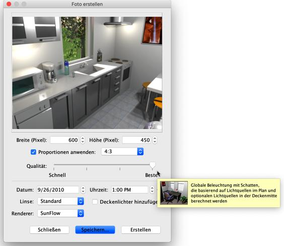
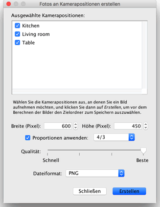

|
|
Fotos erstellen | ||
|
Um 3D-Bilder oder Fotos Ihrer Wohnung zu erstellen, w�hlen Sie den Men�eintrag 3D-Ansicht > Foto erstellen… oder klicken Sie das Foto erstellen-Werkzeug an.
Daraufhin wird das folgende Dialogfenster angezeigt, in dem die Gr��e, die Qualit�t und weitere Einstellungen, die zur Erzeugung des Bildes ben�tigt werden, angeboten werden. Au�erdem enth�lt der Dialog die Schaltfl�che Erstellen, welche die Bildberechnung anst��t, sowie die Schaltfl�che Speichern…, �ber die das angezeigte Bild gespeichert werden kann, sobald es generiert wurde. 
Falls Sie eine andere als die Standardgr��e des Bildes w�nschen, w�hlen Sie eine
andere Breite und H�he. Ist das Kontrollk�stchen
Proportionen anwenden aktiviert, so wird die H�he bei jeder �nderung der Breite
automatisch entsprechend des Proportionsmodus, der in der Auswahlliste eingestellt
ist, angepasst. |
|
|||||||||||||


|
In den zwei besten Qualit�tsstufen ist das Ergebnis abh�ngig vom Standort und der St�rke der Lichtquellen. Standardm��ig wird das Bild f�r die Mittagszeit berechnet, wobei an der Decke jedes Raums zus�tzliche Lichtquellen eingef�gt werden. Wenn Sie die Lichtquellen in Ihrer Wohnung genauer kontrollieren wollen, probieren Sie aus, das Kontrollk�stchen Deckenlichter hinzuf�gen zu deaktivieren. F�gen Sie dann einige Elemente aus der Kategorie Lampen im Wohnungsplan ein und justieren sie ihre Leuchtkraft entweder �ber den Leuchtkraftgreifpunkt oder �ber den Dialog Mobiliar �ndern. Die Lichtst�rke der Sonne, ihre Farbe und die Richtung der Strahlen h�ngen von der Tageszeit und dem gew�hlten Datum, aber auch von der Ausrichtung des Wohnungsplans nach Norden sowie der geografischen Position und der Zeitzone ab. Die letztgenannten Parameter werden �ber den Dialog Kompass bearbeiten bearbeitet. Die globale Helligkeit des Bildes h�ngt auch von der Beleuchtung ab, die im Dialog 3D-Ansicht bearbeiten gew�hlt werden kann. Abgesehen davon erlaubt der Dialog Foto erstellen die Auswahl einer der folgenden vier Linsenarten.
Wenn Sie mehrere Fotos auf einmal berechnen lassen m�chten, speichern Sie die Kamerapositionen, an denen Sie interessiert sind, mit dem Men�eintrag 3D-Ansicht > Kameraposition speichern… und w�hlen Sie dann den Men�eintrag 3D-Ansicht > Fotos von Kamerapositionen aus erstellen…. Ein Dialogfeld, in dem Sie die Gr��e, die Bildqualit�t, sowie das Dateiformat der berechneten Bilder einstellen k�nnen, wird angezeigt, bevor die Bilder berechnet und im von Ihnen gew�hlten Ordner gespeichert werden. In den zwei h�chsten Qualit�tsstufen werden Werte, die Sie zum Zeitpunkt des Speicherns einer Kameraposition im Dialog Foto erstellen eingegeben haben, verwendet. Dies betrifft Datum, Uhrzeit, sowie die f�r die Kameraposition verwendete Linse. Falls Sie den Dialog Foto erstellen noch nie ge�ffnet hatten oder dort keine �nderung an Datum und Uhrzeit vorgenommen haben, wird automatisch der Mittag des Tages, an dem die Wohnung erstellt wurde, angenommen.
 |


|